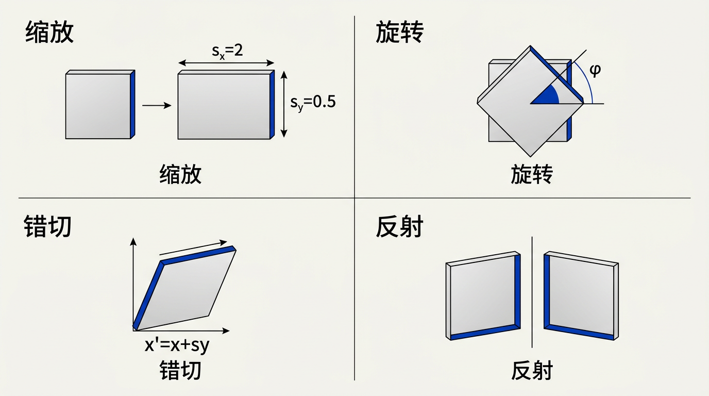
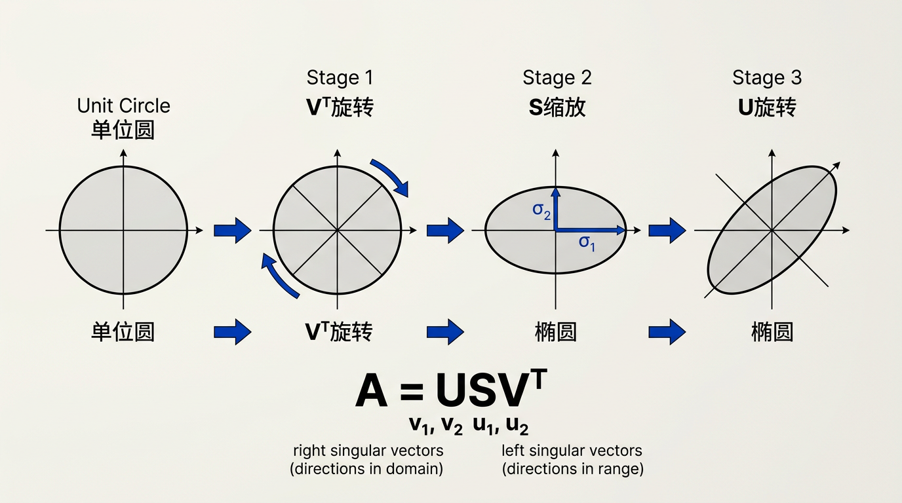
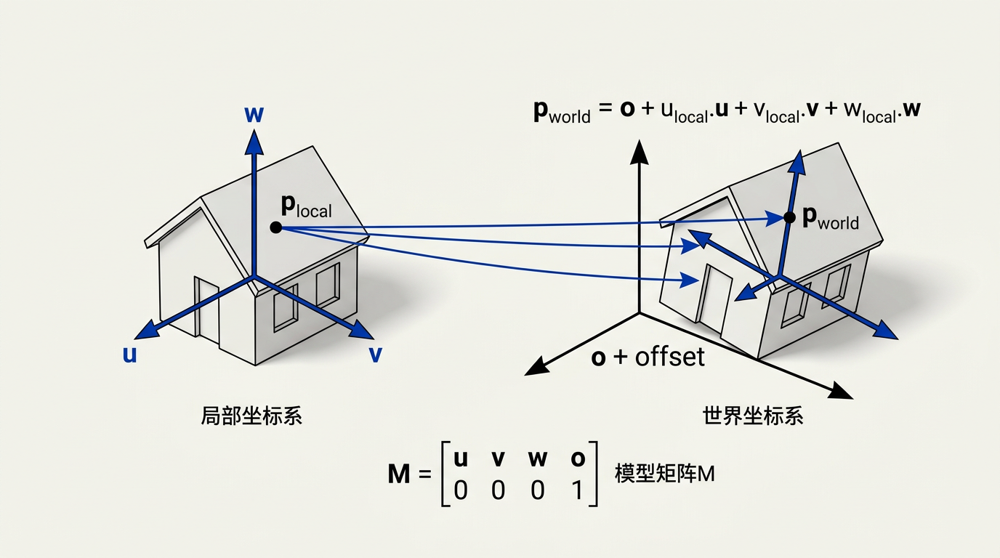

本讲义基于 Steve Marschner & Peter Shirley 所著《虎书》（Fundamentals of Computer Graphics）第5版第7章（p.144-154）变换矩阵。
2D/3D 线性变换的完整表示——缩放/旋转/错切/反射/SVD分解、齐次坐标、模型矩阵。变换是把物体摆到场景的核心机制。
本版插画采用 Guizang 材质插画风格重新绘制。

线性代数的工具可以用来表达在三维场景中排列物体、用摄像机观察它们、以及将它们呈现在屏幕上所需的许多操作。诸如旋转、平移、缩放和投影等几何变换可以通过矩阵乘法完成，而变换矩阵正是实现这一目标的手段。本章描述了二维和三维空间中最常见的几种线性变换和仿射变换，以及如何在代码中实现它们。我们还将探讨如何在不同坐标系之间变换点和向量——这是渲染管线中最基本的操作之一。
生活类比：矩阵就像一把"万能遥控器"——不管你想让电视画面放大（缩放）、翻转（旋转）、变成斜的（错切），还是从镜子里看（反射），对应的按钮都写在一个 2�2 或 3�3 的方格里。更神奇的是，你可以按下"组合键"：先缩放再旋转，两个操作可以浓缩成一个矩阵遥控器。本章就是告诉你每个按钮长什么样，以及怎么组合它们。
想一想：为什么图形学用矩阵而不是"把每个顶点单独变换"？因为场景中有几十万个顶点，每个顶点都要做一遍旋转+平移+缩放+投影。用矩阵，你只需把所有变换压进一个 4�4 矩阵（一次乘法），然后每个顶点只需要一次矩阵-向量乘法——效率提升成千上万倍。这就是"组合在前，应用在后"的设计哲学。
一个线性变换（linear transformation）是一个将向量映射到向量的函数 T，且满足两个条件：可加性 T(u+v) = T(u) + T(v) 和均匀性 T(kv) = k T(v)。所有线性变换都可以用矩阵表示，反之亦然。如果 T 将 R² 映射到 R²，则 T 由一个 2�2 矩阵表示。这是所有图形变换的基础——从缩放一个 UI 元素到旋转整个三维场景。
大多数二维线性变换可以用一个 2�2 矩阵 M 连同矩阵-向量乘法来表示：
[x'] [m₁₁ m₁₂] [x] [y'] = [m₂₁ m₂₂] [y]
我们取矩阵的列作为标准基向量 e₁ = (1,0) 和 e₂ = (0,1) 的变换结果。也就是说，第一列告诉你 (1,0) 被映射到哪里，第二列告诉你 (0,1) 被映射到哪里。这个关键洞见——矩阵的列是基向量的像——使得可视化任何线性变换变得简单。
生活类比：把矩阵的列想象成"新世界的坐标轴上写的刻度"。在原来的世界，x 轴方向是 "(向东走 1 米, 向北走 0 米)"——这是 (1,0)。矩阵的第一列告诉你在新世界里这个"向东走"的动作变成了什么方向。如果你从矩阵列读出来是 (0.87, 0.5)，说明原来的"东"变成了"东北偏东"。同理第二列告诉你"北"变成了什么方向。读懂了这两列，你就读懂了整个空间是怎么被弯折的。
想一想：如果矩阵的第一列是 (0,0)，第二列也是 (0,0)，这个变换会发生什么？答案：所有的点都被映射到原点——整个二维世界坍缩成了一个点。这是行列式为零的极端例子。在图形学中，这对应了你意外地用一个全零矩阵作为变换，所有模型消失不见。
最基本的变换是沿坐标轴的缩放（scaling）。该变换将每个坐标乘以一个因子：x' = s_x·x，y' = s_y·y。对应的矩阵为：
[s_x 0 ] S(s_x, s_y) = [ 0 s_y]
如果 s_x = s_y，则缩放是均匀的（uniform）或各向同性的（isotropic）——物体在所有方向上被相等地缩放，保持其形状不变。如果 s_x ≠ s_y，缩放是非均匀的——圆变成椭圆。如果任一个缩放因子为零，则该方向上的所有信息丢失，投影到一个更低维的空间中。如果缩放因子为负，还会发生反射（见 7.1.4 节）。
生活类比：缩放矩阵就像哈哈镜——均匀缩放（s_x = s_y = 1.5）是放大镜，看起来形状不变只是大了一圈。非均匀缩放（s_x = 2, s_y = 0.5）则是一个方向拉长另一个方向压扁，圆的硬币变成椭圆饼干。负缩放（s_x = −1）就更有趣了，相当于你在镜子里看到的左右颠倒的自己——这个"负缩放"本质上和反射等价。
想一想：缩放矩阵 S(0, 0) 和 S(0.001, 0.001) 有什么本质区别？前者让所有信息不可逆地丢失（行列式 = 0，世界坍缩），后者只是把东西缩得非常非常小——理论上还可以用逆矩阵 S(1000, 1000) 恢复原状。在实际图形编程中，接近零的缩放因子会导致数值计算不稳定（浮点数精度问题），但"真正是零"则意味着矩阵不可逆。
错切（shear）变换将垂直于错切方向的坐标成比例地置换。水平错切（horizontal shear）将 x 坐标推移与 y 成比例的量：x' = x + s·y，y' = y。二维中两种基本的错切矩阵是：
[1 s] [1 0] H_x(s) = [0 1] （水平错切） H_y(s) = [s 1] （垂直错切）
错切保持面积不变——其行列式始终为 1。这在图形学中多次出现：字体中的斜体（oblique）效果不过是一个水平错切变换。推/倾斜摄像机产生类似的效果。在物理学中，如果各层之间存在速度梯度，流体流动表现为错切。
生活类比：错切就像你推一副扑克牌——手按住牌堆的底部不动（y 不变），手掌沿牌面水平推动顶部（x 方向产生与 y 成比例的位移）。每一层都"滑了一步"，但整副牌的总面积（牌堆的侧面积）没变。这就是为什么错切的行列式始终为 1——它只是让形状"歪了"，但没有拉伸或压缩。
想一想：为什么三个错切矩阵的乘积可以实现任意旋转？这是第 7.1.5 节练习中的关键结论。直观理解：错切就像沿一个方向"推挤"，而两个不同方向的推挤组合起来可以产生旋转的效果——就像你推一个盒子的不同角，最终盒子转了方向。这一事实在早期没有浮点硬件的时代非常重要——只用整数加减就可以实现任意角度的图像旋转（三次"推挤"比一次三角函数计算快得多）。
旋转（rotation）保持原点和向量长度不变。在二维中，角度为 φ 的逆时针旋转由以下矩阵给出：
[cos φ −sin φ] R(φ) = [sin φ cos φ]
这个矩阵可以通过观察标准基向量的变换来推导：e₁ = (1,0) 旋转到 (cos φ, sin φ)，e₂ = (0,1) 旋转到 (−sin φ, cos φ)。旋转矩阵的一个重要性质是它是正交的：R(φ)⁻¹ = R(φ)ᵀ = R(−φ)——对旋转求逆只需反向角度，或等价地，取转置。旋转保持长度和角度，且 det(R) = +1（区别于反射的 −1）。
生活类比：旋转矩阵就像一张可以旋转的餐垫（placemat）。你把餐垫逆时针转 30°，上面放的所有餐具（点）都跟着转了 30°，但餐具之间的相对位置和距离完全不变——筷子还是和勺子平行，杯子还是离盘子 5 厘米。旋转的"正交性"就是保证这个"刚体性质"的数学原因。
想一想：为什么旋转矩阵的行列式必须是 +1？行列式衡量的是"有向面积/体积的缩放因子"。旋转不改变任何物体的面积或体积，所以缩放因子必须是 1。行列式为正（而非 −1）则意味着旋转保持"手性"——左手系不变成右手系。如果你看到一个行列式为 −1 的 2�2 矩阵，它一定包含一个反射。
反射（reflection）变换关于一条线翻转坐标。最常见的反射是关于坐标轴的：关于 y 轴的反射将 (x,y) 映射到 (−x,y)，矩阵为 [−1 0; 0 1]；关于 x 轴的反射映射到 (x,−y)，矩阵为 [1 0; 0 −1]；关于原点两者的组合将 (x,y) 映射到 (−x,−y)。与旋转不同，反射的行列式为 −1，这意味着它们反转定向——将右手系转换为左手系。反射本身不能由旋转合成——它们代表一组不同的等距变换。
生活类比：反射就是你照镜子。镜子里你的左手变成了"右手"——这就是手性反转（行列式 = −1）。你可以通过旋转把一本书从正面转到背面（行列式 = +1），但永远不可能把左手手套变成右手手套——你只能"翻转"它。在图形学中，当你把纹理贴在模型背面时，如果模型经过了奇数次反射，纹理就会左右颠倒——这就是行列式为负的后果。
想一想：两个反射的组合会得到什么？答案是：一次旋转。如果你先关于 x 轴反射（上下颠倒），再关于 y 轴反射（左右颠倒），组合效果是 (x,y) → (−x,−y)，这等价于绕原点旋转 180°。行列式 (−1) � (−1) = +1 印证了这一点——两次手性反转恢复了原来的手性。这就是数学上"反射群生成旋转群"的体现。
变换的威力在于组合：多个变换可以通过矩阵乘法结合为单个矩阵。如果我们先应用变换 A，再应用 B，最终的变换是 BA——注意顺序：先应用的变换在右边（最靠近列向量的位置）。这是因为矩阵乘法不满足交换律。公式为：T(v) = B(A(v)) = (BA)v。
任何二维线性变换都可以通过SVD（奇异值分解）分解为三个基本变换：旋转 R₂（由 Vᵀ 给出）、沿轴的缩放 S、和另一个旋转 R₁（由 U 给出）：
A = U S Vᵀ = (R₁)(S)(R₂)
这种分解具有深刻的美感：在二维中，它意味着任何线性变换（无论多么复杂）都可以通过以下步骤实现：旋转坐标系使主轴对齐、沿新轴缩放、再旋转到最终朝向。将一个单位圆通过任意 2�2 矩阵变换后总是成为一个椭圆，其主轴正是 V 和 U 的方向，半轴长度正是奇异值 σ₁ 和 σ₂。这是可视化任何矩阵效果的最强大方式之一——也是第 6.4 节中讨论的 SVD 的几何核心。
生活类比：SVD 就像"如何用弹力绳弯曲一根铁棒"。铁棒不能直接变形成 S 形——但你可以：第一步，把铁棒转到合适的方向（Vᵀ，旋转）；第二步，沿两个方向不均匀地拉伸/压缩（S，缩放——这是唯一真正让形状改变的一步）；第三步，再把结果转到最终朝向（U，旋转）。椭圆就是这么来的——圆的每个"半径方向"被不同的缩放因子处理，半径就变成了半轴。
想一想：如果奇异值 σ₁ = σ₂，变换后的形状是什么？答案：仍然是圆（如果两个奇异值都非零）。此时缩放是各向同性的，S 退化为一个均匀缩放的倍数——单位矩阵的标量倍。这就是为什么均匀缩放+旋转只能产生"旋转后的放大圆"——本质上还是圆。只有当 σ₁ ≠ σ₂ 时，圆才真正变成椭圆。

三维线性变换将第 7.1 节中的思想推广到 R³。一个 3�3 矩阵作用于三维向量 (x, y, z)。与二维情况一样，矩阵的列是标准基向量 e₁、e₂、e₃ 的像，这为理解任何三维变换提供了直观的指导。
沿轴的缩放直接推广：S(s_x, s_y, s_z) 是一个对角矩阵，其对角线元素为 s_x、s_y、s_z。三维旋转比二维旋转更复杂——不再由单个角度参数化。最简单的三维旋转是绕坐标轴旋转。绕 z 轴旋转角度 φ 保持 z 坐标不变，而在 xy 平面上表现为二维旋转：
[cos φ −sin φ 0]
R_z(φ) = [sin φ cos φ 0]
[ 0 0 1]
类似地，绕 x 轴和 y 轴的旋转也有相应的矩阵。任何三维旋转都可以通过绕坐标轴的连续旋转序列来表示——虽然这引入了万向节锁的问题（见第 7.2.1 节），但它是构造任意旋转的最常用的方法。
生活类比：三维旋转矩阵的列就是新坐标系的三个轴，每个轴有 (x,y,z) 三个分量——所以你看到的是一个 3�3 = 9 个数字的矩阵。想象一个飞行模拟器：第一列＝驾驶舱的"右向"，第二列＝"上方"，第三列＝"前方"。当飞机翻滚时，这三列实时更新——你随时可以从矩阵读出飞机当前的朝向。这就是为什么游戏引擎中每个物体的 transform 都包含一个 3�3 旋转矩阵。
想一想：绕 z 轴的旋转矩阵为什么第三行第三列都是 (0,0,1)？因为这表示"什么都不做，保持 z 分量不变"。如果把三维空间看作一层层 xy 平面堆叠起来的，绕 z 轴的旋转就是在每一层 xy 平面上独立地做二维旋转——所有 z 值都原封不动。这就是为什么旋转矩阵的大部分内容只是 2D 旋转的"加框"。
绕任意轴的旋转可以通过旋转矩阵的组合来表达。最通用的方法是使用罗德里格斯旋转公式（Rodrigues' rotation formula）：绕单位向量 a 旋转角度 φ，旋转矩阵为：
R(a, φ) = cos φ · I + (1 − cos φ) · aaᵀ + sin φ · [a]_×
其中 [a]_× 是由 a 构造的叉积矩阵（cross-product matrix）：
[ 0 −a_z a_y]
[a]_× = [ a_z 0 −a_x]
[−a_y a_x 0 ]
这个公式以紧凑的闭式给出了任意轴-角表示下的完整旋转矩阵。注意到一项是单位矩阵的倍数（保留沿 a 的分量），一项是投影（沿 a 的分量由内积测量后的重新分布），一项是叉积（产生垂直于 a 的旋转分量）。
在实际图形编程中，旋转通常使用四元数（quaternions）来表示，而非 3�3 矩阵。四元数是复数的一种推广，能以紧凑的形式编码旋转——仅用四个浮点数——并允许高效的插值（球面线性插值，slerp），而不会遭受万向节锁（gimbal lock）的困扰。万向节锁发生在使用欧拉角时，一个旋转自由度丢失，因为两个旋转轴对齐。这在动画和摄像机控制中是个严重的问题——正是四元数擅长解决的问题。四元数和欧拉角的详细讨论可参见关于动画的章节，但理解基本思想——即四元数编码轴和角度——对于任何图形程序员都是必不可少的。
生活类比：罗德里格斯公式就像"烤肉架上的旋转"。想象一根竹签（单位向量 a）穿过肉块。旋转公式告诉你：肉块绕竹签转一圈，肉块上的每个点最终去了哪里。公式中的三项分别对应三种效果：cos φ · I = "顺着竹签走的那段保持不变"，aaᵀ = "沿着竹签方向的投影贡献"，sin φ · [a]_× = "与竹签垂直方向的旋转分量"。三者合力，就刻画了完整的三维旋转。
想一想：四元数 vs 欧拉角——为什么飞机导航不用欧拉角？试想你正在飞行模拟器中驾驶飞机，先绕 x 轴抬头 90°（俯仰），再绕 y 轴转弯（偏航）。抬头 90° 后，原来的 y 轴（偏航轴）现在对准了原来的 z 轴——再转弯时，你实际在绕 z 轴转动，失去了一个旋转自由度。这就是"万向节锁"——一旦两个旋转轴对齐，你就无法表达某些姿态。四元数用一个 4 维球面上的点表示所有可能的三维旋转，不会出现这种奇点。
当通过矩阵 M 变换曲面时，顶点位置正确变换为 Mv。然而，表面法向量（normal vectors）的变换方式不同。直观上，如果物体在一个方向上被拉伸（非均匀缩放），表面变得更倾斜，法线需要比顶点的变换量更大才能保持垂直于表面。
正确的是：法向量应使用 M 的逆转置矩阵（inverse transpose）进行变换——即 (M⁻¹)ᵀ 或等价地 (Mᵀ)⁻¹。从数学上讲，这是因为法线变换必须保持点积方程 n·t = 0（法线和切线之间的正交性）：如果切向量变换为 Mt，法线必须变换为 (M⁻¹)ᵀ n 才能满足新方程。对于仅包含旋转和平移（即刚体变换，M 是正交的）的变换，逆转置简化为原始矩阵 M——法向量和顶点以相同方式旋转。但在非均匀缩放或涉及错切的变换中，使用错误矩阵变换法线会导致明显不正确的着色。大多数图形引擎在将法线从对象空间变换到世界空间时会自动处理这一问题。
生活类比：法线需要"逆转置"就像气球被压扁时表面的气球皮。假设一个正方体气球沿 x 方向压扁——原来垂直于侧面的法线（指向正右方）在压扁后仍然指向右方（不需要改变），但原来指向右上方 45° 的斜面法线在压扁后必须变得更加"陡峭"才能与新斜面垂直。普通的矩阵变换 M 会把这个 45° 法线也沿 x 方向"压扁"，造成法线与表面不再垂直。逆转置 (M⁻¹)ᵀ 正是为了补偿这个压扁——它让法线在变形后始终保持垂直于表面。
想一想：为什么 99% 的游戏管线中法线直接用相同矩阵变换就能工作？因为游戏中大多数变换是刚体变换——只包含旋转和平移（角色移动、转向），没有非均匀缩放。而当使用均匀缩放时（如把整个人物放大 1.2 倍），法线变换后长度改变，但方向仍正确——只需重新归一化即可。只有当物体在一个方向上被"压扁"（非均匀缩放或错切）时，逆转置才真正发挥不可替代的作用。
线性变换的局限性在于它们保持原点不变。这一限制排除了平移（translation）——将每个点移动一个固定向量 b 的操作：p' = p + b。平移不是一个线性变换（它不满足 T(0) = 0），但它对于在场景中放置物体至关重要。我们通过转换到齐次坐标（homogeneous coordinates）来纳入平移：将向量 (x, y, z) 增强为 (x, y, z, 1)。
平移本身具有简单形式，但现在可以用矩阵乘法来表示：
[1 0 0 t_x]
[0 1 0 t_y]
T(t) = [0 0 1 t_z]
[0 0 0 1 ]
一个仿射变换（affine transformation）是线性变换后跟平移。在齐次坐标中，任何仿射变换都可以写成一个 4�4 矩阵：
M = [A t]
[0ᵀ 1]
其中 A 是一个 3�3 线性变换矩阵，t 是平移向量。对于向量（方向——那些不关心位置的量，如法线和光线方向），我们使用齐次坐标的 w = 0 分量。这自然地排除了平移对向量的影响，因为 T(t)·(v, 0)ᵀ = (Av, 0)ᵀ——平移不影响方向向量。这种对点和向量的巧妙区分（w=1 vs w=0）优雅地编码了计算机图形学中"位置"和"方向"之间的数学差异。
生活类比：齐次坐标的 w 就像快递单上的"包裹类型"标记。如果一个包裹是"家具"（w=1），送货员会把它搬到正确的地址（平移有效）；如果一个包裹是"风向"（w=0），无论在哪个城市测量，风向都保持不变（平移无效——北京吹的北风和上海吹的北风是同一个方向）。这个标签不需要你在代码里写 if-else 判断——矩阵乘法的数学自动处理了"w=0 就跳过平移"的逻辑。
想一想：如果不用齐次坐标，我们如何实现平移？答案是：单独做加法 p' = p + t——在组合变换链中写成 p' = A(p) + t。但当你要组合多次平移和旋转（先平移 A、再旋转 B、再平移 C、再缩放 D）时，表达式会变成极其复杂的分段式嵌套：B(A·p + tₐ) + t_b ……而且旋转和平移不能统一处理。齐次坐标的美在于把所有这些"线性部分+平移部分"都塞进一个 4�4 矩阵，乘法统一处理一切。
在齐次坐标中，变换的组合（composition）一如既往是矩阵乘法，平移被无缝地纳入矩阵乘积中。任何仿射变换序列都可以通过乘以相应的 4�4 矩阵合成单个矩阵——这是现代图形管线背后的基本原理：一个 4�4 的模型矩阵（model matrix）编码了从对象局部空间到世界空间所需的所有缩放、旋转和平移。
在许多图形算法中，不仅需要应用变换，还需要将其反转。给定一个仿射变换 M，我们需要计算 M⁻¹。对于基本变换，逆矩阵有简单的闭式：
对于复合变换，逆遵循乘积规则：(AB)⁻¹ = B⁻¹A⁻¹。因此，通过将各个逆按反向顺序相乘，可以找到由多个基本变换构成的变换的逆。这对于从世界空间变换回物体局部空间（求模型矩阵的逆）或从屏幕空间取消投影（求投影矩阵的逆）至关重要。
生活类比：矩阵逆就像"撤销"按钮（Ctrl+Z）。如果你先穿外套（平移 A）再戴帽子（旋转 B），要回到原始状态你得先摘帽子（逆旋转 B⁻¹）再脱外套（逆平移 A⁻¹）——顺序必须反过来。这就是 (AB)⁻¹ = B⁻¹A⁻¹ 的日常含义。在图形学中，"撤销一个变换链"最常见的应用就是视图矩阵（摄像机矩阵的逆）。
想一想：为什么旋转矩阵的逆恰好等于转置？这不是巧合——这是正交矩阵的精髓。旋转矩阵的三列是三个互相垂直的单位向量（构成新坐标系的 x/y/z 轴）。如果把矩阵转置，原来的"列向量"变成了"行向量"——而行向量作用在任意向量上就是计算该向量在新轴上的投影分量。转置后的矩阵恰好把"新坐标系中的坐标"映射回"原始坐标系中的坐标"——这正是逆变换要做的事情。几何上的直观解释：(MᵀM)v 就是先把向量旋转过去，再通过投影旋转回来，得到的结果恰好是 v 本身。
对于一般矩阵，通常需要数值方法（如高斯-约旦消元法或 LU 分解）来计算逆矩阵。但在图形学中，大多数变换都是刚体变换（仅旋转和平移）——在这种情况下，变换矩阵具有一种特殊的分块结构，使得逆矩阵特别容易计算：如果 M = [R t; 0ᵀ 1]（R 是正交的旋转矩阵），则：
[Rᵀ −Rᵀ·t] M⁻¹ = [0ᵀ 1 ]
注意即使在这里，逆向的顺序也很重要：先平移回去（用 −Rᵀ·t），再应用逆旋转（Rᵀ）。为什么不是 −t 而是 −Rᵀ·t？因为逆旋转 Rᵀ 会把"世界空间中的平移向量 t"变换到"物体局部空间中的反向平移"——你需要在正确的坐标系中撤销平移。

在计算机图形学中，管理多个坐标系是日常工作。一个点可以用许多不同的方式表示——取决于使用哪个坐标系。将坐标从一个框架变换到另一个框架可能看起来像是应用变换，但它与变换物体位置有着微妙的区别。关键区别在于：变换物体将物体运动到一个新的位置，而变换坐标保持物体不动，但改变观察它的框架。
生活类比：坐标变换就像两个人用不同的地图描述同一个地点。张三坐在北京说："上海的东方明珠在我正东 500 公里处"（张三的世界坐标）。李四站在上海外滩说："东方明珠在我西北方向 2 公里处"（李四的局部坐标）。同一个点（东方明珠），两个不同的坐标值。模型矩阵做的事情就是帮"张三的语言"翻译成"世界通用位置"："从张三的位置出发，向东走 500 公里" = 世界地图上的一个具体经纬度。
想一想：模型矩阵和视图矩阵为什么是"反向"关系？模型矩阵说："物体放在世界空间的这个位置"（把物体从局部空间搬到世界空间）。视图矩阵说："用一个摄像机观察世界空间"（把世界空间中的所有东西搬到摄像机空间）。但视图矩阵实际上是摄像机世界矩阵的逆——因为"把摄像机放在(5,0,0)"对于场景中的物体来说，等价于"把所有物体向反方向平移 (−5,0,0)"。这就是"相机不动世界在动"和"世界不动相机在动"两种等价观点。
设我们有一个标准（世界）坐标系，以及一个由原点 o 和基向量 u、v、w 定义的局部坐标系。在局部框架中具有坐标 (u_a, v_a, w_a) 的点 a 在世界空间中的坐标为：
a_world = o + u_a · u + v_a · v + w_a · w
将局部坐标转换为世界坐标的矩阵就是由基向量作为列、原点作为平移分量构造的矩阵：
M = [u v w o]
[0 0 0 1]
——即模型矩阵。反向变换——将世界坐标转换为局部坐标——是 M⁻¹。对于标准正交框架（基向量相互正交且为单位长度），M⁻¹ 的旋转部分只是一个转置：位置向量的局部坐标通过从世界位置减去原点 o，然后与基向量进行点积得到：
u_a = (p − o) · u v_a = (p − o) · v w_a = (p − o) · w
这个框架在渲染管线中无时无刻不在使用：模型矩阵将顶点从对象空间变换到世界空间；视图矩阵将世界空间变换到摄像机（眼睛）空间——其中摄像机位于原点，观察沿 −z 方向；投影矩阵将摄像机空间变换到裁剪空间，为光栅化做准备。第 8 章将详细探讨这些变换以及它们如何组合形成整个渲染管线。
解答：三维平移矩阵（齐次坐标形式）：
[1 0 0 x_m]
[0 1 0 y_m]
T(x_m,y_m,z_m)=[0 0 1 z_m]
[0 0 0 1 ]
对于点 p = (x, y, z, 1)ᵀ：T·p = (x+x_m, y+y_m, z+z_m, 1)ᵀ —— 平移生效。
对于方向向量 v = (v_x, v_y, v_z, 0)ᵀ：T·v = (v_x, v_y, v_z, 0)ᵀ —— 平移被屏蔽。这正是 w=0 的核心威力。
解答：绕 y 轴旋转（右手法则：拇指指向 +y，手指弯曲方向为正旋转）。旋转发生在 xz 平面，y 保持不变：
[cos θ 0 sin θ 0]
[ 0 1 0 0]
R_y(θ)= [−sin θ 0 cos θ 0]
[ 0 0 0 1]
验证：e₁ = (1,0,0,0)ᵀ → R_y·e₁ = (cosθ, 0, −sinθ, 0)ᵀ（x 轴向 −z 方向偏转）。e₃ = (0,0,1,0)ᵀ → R_y·e₃ = (sinθ, 0, cosθ, 0)ᵀ（z 轴向 +x 方向偏转）。从 +y 向下看，正旋转是逆时针的——x→z 是顺时针 = x→(−z) 是逆时针。
解答：均匀缩放（uniform scaling）——所有轴乘以同一因子：
[0.5 0 0 0]
[ 0 0.5 0 0]
S(0.5)= [ 0 0 0.5 0]
[ 0 0 0 1]
缩放矩阵的行列式 = 0.5 × 0.5 × 0.5 × 1 = 0.125。体积按 |det(S)| 缩放——新体积 = V × 0.125 = V/8。物体在每个维度上缩小一半，体积变为原来的八分之一。注意缩放因子为负时（如 s_x = −1），体积仍按绝对值缩放，但手性翻转。
解答：顺时针 90° = 逆时针 −90°：
[cos(−90°) −sin(−90°)] [ 0 1] R_cw90 = [sin(−90°) cos(−90°)] = [−1 0]
验证：(1,0)ᵀ → (0,−1)ᵀ（x 轴到负 y 轴，顺时针）。
三个错切分解：任意二维旋转可以通过三次错切实现——R_cw90 = H_y(−1)·H_x(1)·H_y(−1)：
[1 0;−1 1]·[1 1;0 1]·[1 0;−1 1] = [0 1;−1 0] ✓
实用意义：错切矩阵的乘法只涉及加法和移位——没有浮点乘法、没有三角函数。在早期无浮点硬件的时代，这个技巧可以让图像旋转在整数运算中高效完成。每个错切相当于一个行/列的"推挤"操作，可以在位图层面实现。
解答：刚体变换的逆矩阵具有封闭形式：
[Rᵀ −Rᵀ·t] M⁻¹ = [0ᵀ 1 ]
推导：先逆旋转（用 Rᵀ，因为旋转矩阵是正交的），再逆平移。逆平移需要 −Rᵀ·t 而非简单的 −t——因为 t 定义在世界空间中，需要用 Rᵀ 先旋转到局部空间再取反。
2D 变换矩阵 [[0,−1,1],[1,0,1],[0,0,1]]：左上 2x2 = [0,−1; 1,0] = 逆时针 90° 旋转。平移部分 = (1,1)。整体效果：先将点绕原点逆时针旋转 90°，然后将结果平移 (1,1)。例如 (1,0) → 旋转后 (0,1) → 平移 (1,2)。
解答：设 M⁻¹ = [X y; zᵀ w]，其中 X 是 n×n 矩阵，y 是 n-向量，z 是 n-向量，w 是标量。
由 M·M⁻¹ = I：
[A t]·[X y] [A·X + t·zᵀ A·y + t·w] [0 1] [zᵀ w] = [ zᵀ w ] = [I 0; 0ᵀ 1]
逐项对照：
因此 M⁻¹ = [A⁻¹ −A⁻¹t; 0ᵀ 1]——确实具有相同的分块形式，底行仍是 (0,…,0,1)。仿射变换的逆仍然是仿射的，证明完毕。
Q: 我能不能直接把变换硬编码，为什么非要学矩阵这套形式化方法？
A: 可以硬编码，但在实践中推导更难、调试更难、效率也不会更高。最重要的是，所有的现代图形 API（OpenGL、DirectX、Vulkan、Metal）都使用矩阵形式——要使用这些库，你必须理解这种表示。矩阵的优势在于统一性：变换的组合变成了矩阵乘法、变换的逆变成了矩阵求逆、变换的应用变成了矩阵-向量乘法——所有操作针对不同变换（平移/旋转/缩放/错切/投影）都相同，无需为每种组合专门手写代码。硬编码虽然在小例子中看起来简单，但当场景中包含上百个物体（各自有不同的变换链）时，矩阵的代数可组合性让工程师免于在细节中迷路。
Q: 矩阵底行总是 (0,0,0,1)——我真的需要存储它吗？
A: 如果只使用仿射变换（旋转、平移、缩放、错切），底行确实是固定的 (0,0,0,1)——不需要存储，可以隐式地假定。但如果你使用透视投影（第 8 章），底行会变成 (0,0,−1,0)（或类似的），不再是 (0,0,0,1)。此时隐式假定会失效，必须显式存储。实际做法：大多数引擎在"模型-视图"阶段用 3×4 矩阵（隐式假设底行），在"投影"阶段切换到完整的 4×4 矩阵。GPU 统一使用 4×4，底行由 API 自动填充。
Q: 为什么法线要特殊处理（用逆转置）？直接用同样的矩阵变换不行吗？
A: 不行——因为法线是面的属性（垂直于面），不是空间中的独立向量。当物体经历非均匀缩放时（如 x 方向拉伸 2 倍，y 方向不变），表面被压扁——一个原本 45° 的法线不再与变形后的表面垂直。逆转置矩阵 (M⁻¹)ᵀ 正是为保持这个垂直关系而设计的：对于任意表面切向量 t，M·t 是变形后的切向量，而 (M⁻¹)ᵀ·n 恰好满足 (M·t) · ((M⁻¹)ᵀ·n) = t·n = 0——保持了切向量与法线的正交性。对于刚体变换（仅旋转和平移），M⁻¹ = Mᵀ（正交矩阵），所以 (M⁻¹)ᵀ = M——此时可以直接用原矩阵。这就是为什么大多数游戏管线中普通变换就够用了——角色动画主要是旋转和平移，缩放只有均匀缩放。
Q: 齐次坐标中的 w 分量到底是什么？为什么点用 w=1，方向用 w=0？
A: w 分量本质上是一种类型标记，记录这个坐标是"位置"还是"位移/方向"。w=1 表示一个点（位置）：平移会影响它。w=0 表示一个方向向量或偏移量：平移不会影响它。验证：矩阵的第四列（平移分量）只乘以 w——当 w=0 时，平移分量完全被忽略，方向保持不变。当 w=1 时，平移全量叠加。更深层次的理解：w 实现了几何上的"无限远点"概念——一个方向可以理解为无限远位置的方向，移动无限远点不会改变它的方向。齐次坐标还统一了仿射和投影变换的表示——透视除法由 w≠1 驱动，此时 w 不再是简单的类型标记，而是深度通过投影矩阵"编码"进 w 中。
Q: 坐标变换和变换物体位置有什么不同？矩阵用法一样吗？
A: 数学上使用相同的矩阵，但解释方向不同。变换物体位置：模型矩阵 M_model 编码在物体局部坐标系中的"摆放"——它将局部坐标转换为世界坐标。例如"把人从原点移到 x=5"：p_world = M_model · p_local。坐标变换：视图矩阵 M_view 编码摄像机的摆放——但它做反向操作，将世界坐标转为摄像机坐标。M_view 是摄像机世界矩阵的逆——摄像机在世界中的放置 × 反向映射。关键区别：模型矩阵是"放置物体"（前向），视图矩阵是"收回摄像机"（反向）。两者的矩阵形式相同，但语义是对偶的——这就是为什么 M_model 和 M_view 都叫"变换矩阵"但作用截然相反。
Q: 为什么旋转矩阵的逆等于它的转置？这有什么几何含义？
A: 旋转矩阵是正交矩阵（列向量构成正交归一基）。旋转的逆是一个相反方向的旋转——也就是原旋转的"撤销"。几何上，如果矩阵的三列是三个互相垂直的单位向量 (u,v,w)，那么转置后这三个向量变成了行——而行的作用是把任意向量投影到这组新基上。具体地，Mᵀ·v = (u·v, v·v, w·v)——这是 v 在新基下的坐标（分量）。旋转的逆 = 用反向的轴重建原始坐标 = 用转置矩阵投影到原始基上。正交性保证了列向"构建新基"的效果与行向"投影到新基"的效果互为逆——这是线性代数中最优美的结果之一。实际中，Rᵀ 的计算比求逆（R⁻¹ = adj(R)/det(R)）快得多——只需重排 9 个数字，无需除法或迭代。